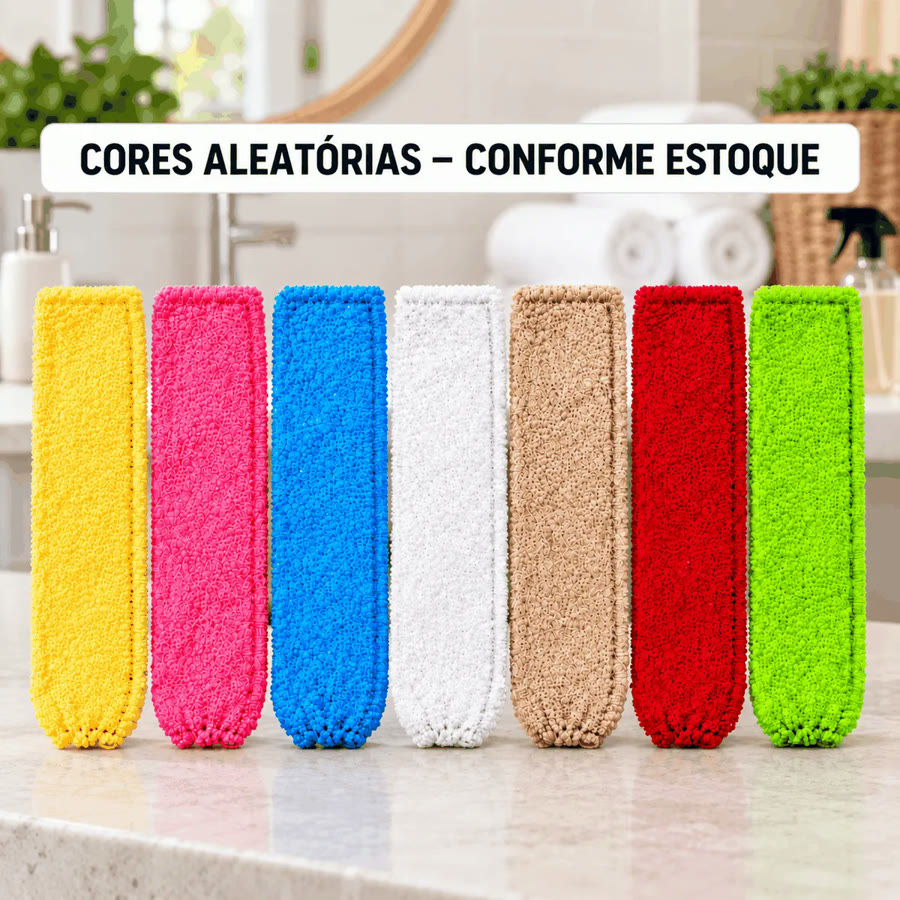
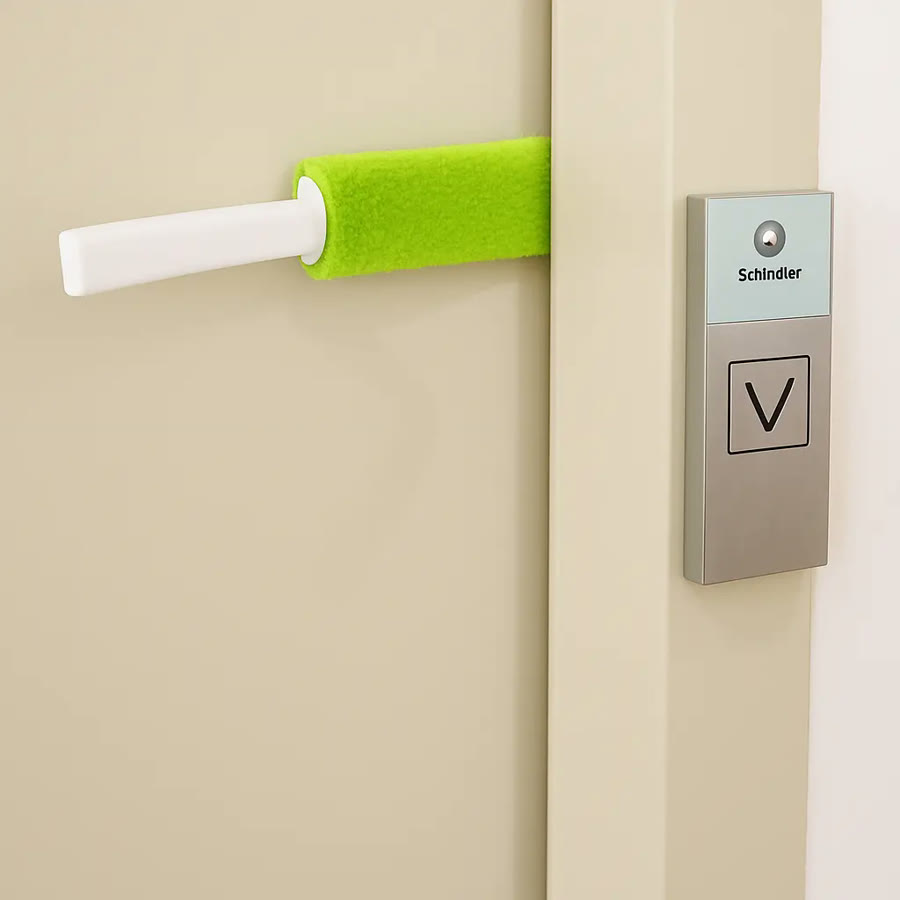
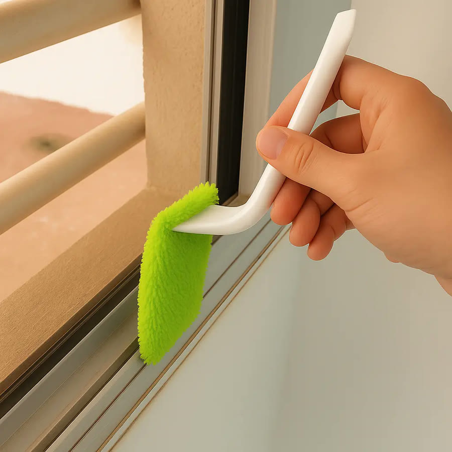
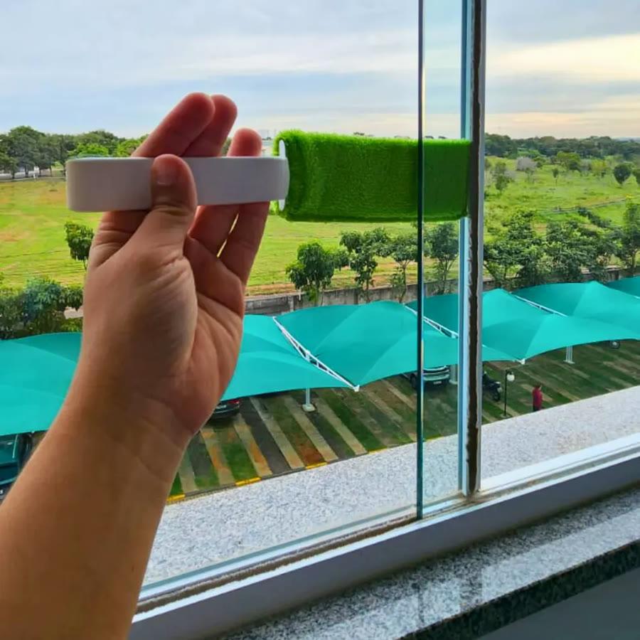
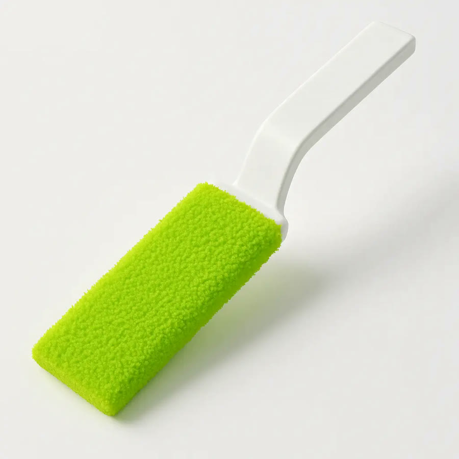
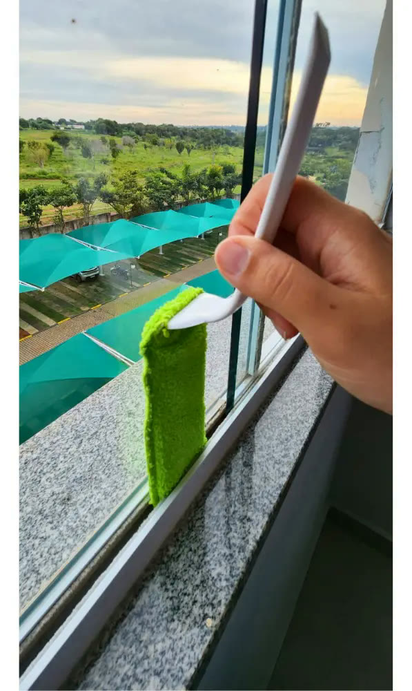
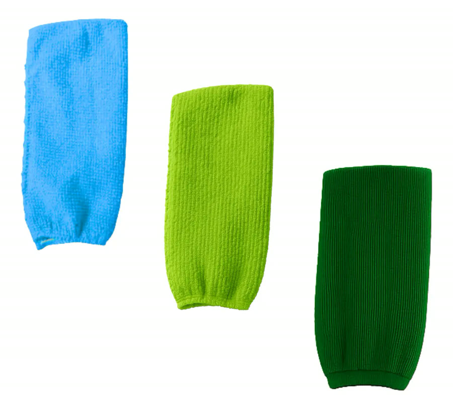

Achado nº 52
Espátula limpa-vão de box e janela de correr + 3 panos de microfibra








O que diz a página oficial do produto
- É um kit com uma espátula fina de plástico e 3 panos de microfibra que encaixam nela
- Segundo o anúncio, a ponta da espátula também funciona como raspador
- Segundo o anúncio, serve para limpar o vão entre os vidros do box e da janela de correr, portas, venezianas e as saídas de ar do carro
- Segundo o anúncio, o pano de microfibra não solta fiapos e não deixa o vidro embaçado
- Mede 25 cm por 5,5 cm; a parte da espátula tem 13 cm
- A cor dos panos vai conforme o estoque
- No Mercado Livre, tem nota 4,6 com mais de 140 avaliações e mais de 5 mil vendidos
Link de afiliado: se você comprar por ele, a Achadaria pode receber uma comissão, sem custo extra para você. Preço, estoque e entrega são da loja e podem mudar; confira lá antes de comprar.